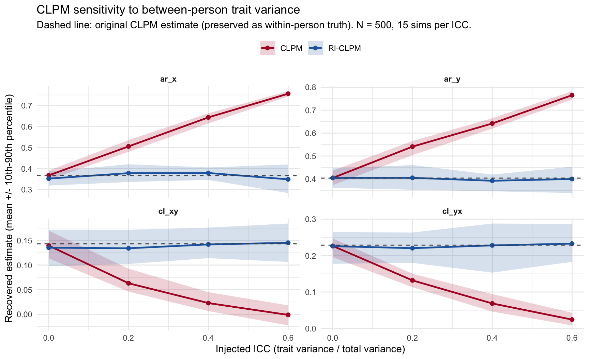

syntax <- estimateCLPM(waves = 4)
out <- lavaanDiagnose(syntax, data = my_data, icc_vars = c("x", "y"))
out # full bundled reportAppendix A — Package Reference
This appendix is a compact tour of every user-facing function in crossLagR. Each estimator section shows the generated lavaan syntax, fits the model to simulated data, and prints a crossLagRSummary() so you can see what an actual call returns. The final section documents the four S3 output classes the package exposes.
A.1 Quick start
The intended user workflow is three lines: build syntax, fit + diagnose, inspect.
lavaanDiagnose() returns a crossLagR_fit object that bundles the lavaan fit, a labelled parameter summary, a Heywood-case diagnosis, and (optionally) an ICC report.
A.2 Estimators
Every estimator function returns a character string of lavaan syntax. Parameter labels follow the unified scheme from Usami, Murayama, and Hamaker (2019): ar_x, ar_y, cl_xy, cl_yx on the dynamic equation, d_var_x, d_var_y, d_cov_xy on dynamic residuals, plus model-specific labels for random intercepts (I_x), growth factors (S_x, Q_x), trait/state decompositions (T_var_x, s_var_x), etc. Run unifiedLabels() for the full catalog with plain-language descriptions.
A.2.1 CLPM — estimateCLPM()
Standard cross-lagged panel model. All observed variance is treated as within-person; no between-person random intercept.
estimateCLPM(waves = 4) |> cat() p1 =~ 1*y1
q1 =~ 1*x1
p2 =~ 1*y2
q2 =~ 1*x2
p3 =~ 1*y3
q3 =~ 1*x3
p4 =~ 1*y4
q4 =~ 1*x4
p1 ~ 1
q1 ~ 1
p2 ~ 0*1
q2 ~ 0*1
p3 ~ 0*1
q3 ~ 0*1
p4 ~ 0*1
q4 ~ 0*1
y1 ~ 0*1
x1 ~0*1
y2 ~ 0*1
x2 ~0*1
y3 ~ 0*1
x3 ~0*1
y4 ~ 0*1
x4 ~0*1
p2 ~ ar_y*p1 + cl_xy*q1
q2 ~ ar_x*q1 + cl_yx*p1
p3 ~ ar_y*p2 + cl_xy*q2
q3 ~ ar_x*q2 + cl_yx*p2
p4 ~ ar_y*p3 + cl_xy*q3
q4 ~ ar_x*q3 + cl_yx*p3
p1 ~~ d_var_y1*p1
q1 ~~ d_var_x1*q1
p2 ~~ d_var_y*p2
q2 ~~ d_var_x*q2
p3 ~~ d_var_y*p3
q3 ~~ d_var_x*q3
p4 ~~ d_var_y*p4
q4 ~~ d_var_x*q4
p1 ~~ d_cov_xy1*q1
p2 ~~ d_cov_xy*q2
p3 ~~ d_cov_xy*q3
p4 ~~ d_cov_xy*q4
y1 ~~ 0*y1
x1 ~~ 0*x1
y2 ~~ 0*y2
x2 ~~ 0*x2
y3 ~~ 0*y3
x3 ~~ 0*x3
y4 ~~ 0*y4
x4 ~~ 0*x4dat_clpm <- simCLPM(waves = 4, sample_size = 500, seed = 1)$data
fit_clpm <- lavaan(estimateCLPM(waves = 4), data = dat_clpm,
meanstructure = TRUE)
crossLagRSummary(fit_clpm)crossLagR model summary (CI: 95%)
==================================================
Converged: TRUE N obs: 500 N missing: 0
Parameters (unified labels)
--------------------------------------------------
label description est se z p
ar_y Autoregressive effect of Y (Y(t-1) -> Y... 0.404 0.026 15.328 0.000
cl_xy Cross-lagged effect of X on Y (X(t-1) -... 0.143 0.026 5.604 0.000
ar_x Autoregressive effect of X (X(t-1) -> X... 0.366 0.026 13.987 0.000
cl_yx Cross-lagged effect of Y on X (Y(t-1) -... 0.229 0.027 8.470 0.000
d_var_y1 Within-person residual variance of Y 1.013 0.064 15.811 0.000
d_var_x1 Within-person residual variance of X 1.074 0.068 15.811 0.000
d_var_y Within-person residual variance of Y 1.066 0.039 27.386 0.000
d_var_x Within-person residual variance of X 1.119 0.041 27.386 0.000
d_cov_xy1 Within-person residual covariance X<->Y 0.265 0.048 5.514 0.000
d_cov_xy Within-person residual covariance X<->Y 0.383 0.030 12.801 0.000
95% CI sig std
[0.352, 0.455] *** 0.359
[0.093, 0.193] *** 0.131
[0.315, 0.417] *** 0.325
[0.176, 0.281] *** 0.197
[0.887, 1.139] *** 1.000
[0.941, 1.207] *** 1.000
[0.990, 1.143] *** 0.830
[1.039, 1.199] *** 0.823
[0.171, 0.360] *** 0.254
[0.324, 0.441] *** 0.350
---
Significance: '***' p<.001 '**' p<.01 '*' p<.05 '.' p<.10
Fit statistics
--------------------------------------------------
chi-square = 16.226 df = 32 p = 0.991
CFI = 1.000 TLI = 1.015
RMSEA = 0.000 [0.000, 0.000]
SRMR = 0.024
AIC = 11452.836 BIC = 11503.411A.2.2 RI-CLPM — estimateRICLPM()
Random-Intercept CLPM (Hamaker, Kuiper, and Grasman 2015). Decomposes each observation into a stable trait (I_x, I_y) plus a within-person deviation, with the dynamic equation on the deviations.
estimateRICLPM(waves = 4) |> cat()
# Random Intercepts (Trait Factors I)
I_x =~ 1*x1 + 1*x2 + 1*x3 + 1*x4
I_y =~ 1*y1 + 1*y2 + 1*y3 + 1*y4
# Within-Person Latent Variables
p1 =~ 1*x1
q1 =~ 1*y1
p2 =~ 1*x2
q2 =~ 1*y2
p3 =~ 1*x3
q3 =~ 1*y3
p4 =~ 1*x4
q4 =~ 1*y4
# Within-person factor means (fixed to 0)
p1 ~ 0*1
q1 ~ 0*1
p2 ~ 0*1
q2 ~ 0*1
p3 ~ 0*1
q3 ~ 0*1
p4 ~ 0*1
q4 ~ 0*1
# Trait factor means (free)
I_x ~ 1
I_y ~ 1
# Observed intercepts (fixed to 0)
x1 ~ 0*1
y1 ~ 0*1
x2 ~ 0*1
y2 ~ 0*1
x3 ~ 0*1
y3 ~ 0*1
x4 ~ 0*1
y4 ~ 0*1
# Autoregressive and Cross-lagged Effects
p2 ~ ar_x*p1 + cl_yx*q1
q2 ~ ar_y*q1 + cl_xy*p1
p3 ~ ar_x*p2 + cl_yx*q2
q3 ~ ar_y*q2 + cl_xy*p2
p4 ~ ar_x*p3 + cl_yx*q3
q4 ~ ar_y*q3 + cl_xy*p3
# Dynamic Residual Variances
p1 ~~ d_var_x*p1
q1 ~~ d_var_y*q1
p2 ~~ d_var_x*p2
q2 ~~ d_var_y*q2
p3 ~~ d_var_x*p3
q3 ~~ d_var_y*q3
p4 ~~ d_var_x*p4
q4 ~~ d_var_y*q4
# Dynamic Residual Covariances
p1 ~~ d_cov_xy*q1
p2 ~~ d_cov_xy*q2
p3 ~~ d_cov_xy*q3
p4 ~~ d_cov_xy*q4
# Trait Factor (I) Variances and Covariances
I_x ~~ I_x
I_y ~~ I_y
I_x ~~ I_y
# Fix Observed Variable Residuals to Zero
x1 ~~ 0*x1
y1 ~~ 0*y1
x2 ~~ 0*x2
y2 ~~ 0*y2
x3 ~~ 0*x3
y3 ~~ 0*y3
x4 ~~ 0*x4
y4 ~~ 0*y4dat_riclpm <- simRICLPM(waves = 4, sample.nobs = 500)$data
fit_riclpm <- lavaan(estimateRICLPM(waves = 4), data = dat_riclpm,
meanstructure = TRUE)
crossLagRSummary(fit_riclpm)crossLagR model summary (CI: 95%)
==================================================
Converged: TRUE N obs: 500 N missing: 0
Parameters (unified labels)
--------------------------------------------------
label description est se z p
ar_x Autoregressive effect of X (X(t-1) -> X... 0.215 0.046 4.646 0.000
cl_yx Cross-lagged effect of Y on X (Y(t-1) -... 0.044 0.038 1.153 0.249
ar_y Autoregressive effect of Y (Y(t-1) -> Y... 0.329 0.050 6.625 0.000
cl_xy Cross-lagged effect of X on Y (X(t-1) -... 0.018 0.040 0.457 0.647
d_var_x Within-person residual variance of X 0.947 0.042 22.447 0.000
d_var_y Within-person residual variance of Y 1.036 0.048 21.627 0.000
d_cov_xy Within-person residual covariance X<->Y 0.067 0.032 2.095 0.036
95% CI sig std
[0.124, 0.305] *** 0.210
[-0.031, 0.120] 0.045
[0.231, 0.426] *** 0.312
[-0.061, 0.098] 0.017
[0.865, 1.030] *** 1.000
[0.942, 1.130] *** 1.000
[0.004, 0.130] * 0.068
---
Significance: '***' p<.001 '**' p<.01 '*' p<.05 '.' p<.10
Fit statistics
--------------------------------------------------
chi-square = 36.389 df = 32 p = 0.272
CFI = 0.998 TLI = 0.998
RMSEA = 0.017 [0.000, 0.038]
SRMR = 0.031
AIC = 12864.238 BIC = 12914.813A.2.3 ALT — estimateALT()
Autoregressive Latent Trajectory model. AR/CL paths run on the observed scores directly, on top of an intercept (I_x) and slope (S_x) growth factor.
estimateALT(waves = 4) |> cat()# Latent variables (perfect indicators)
p1 =~ 1*x1
q1 =~ 1*y1
p2 =~ 1*x2
q2 =~ 1*y2
p3 =~ 1*x3
q3 =~ 1*y3
p4 =~ 1*x4
q4 =~ 1*y4
# Fix observed residuals to zero
x1 ~~ 0*x1
y1 ~~ 0*y1
x2 ~~ 0*x2
y2 ~~ 0*y2
x3 ~~ 0*x3
y3 ~~ 0*y3
x4 ~~ 0*x4
y4 ~~ 0*y4
# Fix observed intercepts to zero
x1 ~ 0*1
y1 ~ 0*1
x2 ~ 0*1
y2 ~ 0*1
x3 ~ 0*1
y3 ~ 0*1
x4 ~ 0*1
y4 ~ 0*1
# Growth factors (accumulating, load on waves 2:T)
I_x =~ 1*p2 + 1*p3 + 1*p4
S_x =~ 1*p2 + 2*p3 + 3*p4
I_y =~ 1*q2 + 1*q3 + 1*q4
S_y =~ 1*q2 + 2*q3 + 3*q4
# Autoregressive and cross-lagged paths
p2 ~ ar_x*p1 + cl_yx*q1
q2 ~ ar_y*q1 + cl_xy*p1
p3 ~ ar_x*p2 + cl_yx*q2
q3 ~ ar_y*q2 + cl_xy*p2
p4 ~ ar_x*p3 + cl_yx*q3
q4 ~ ar_y*q3 + cl_xy*p3
# Exogenous wave 1 variances, covariance, and means
p1 ~~ p1
q1 ~~ q1
p1 ~~ q1
p1 ~ 1
q1 ~ 1
# Dynamic residual variances and covariances
p2 ~~ d_var_x*p2
q2 ~~ d_var_y*q2
p3 ~~ d_var_x*p3
q3 ~~ d_var_y*q3
p4 ~~ d_var_x*p4
q4 ~~ d_var_y*q4
p2 ~~ d_cov_xy*q2
p3 ~~ d_cov_xy*q3
p4 ~~ d_cov_xy*q4
# Fix endogenous latent means to zero
p2 ~ 0*1
q2 ~ 0*1
p3 ~ 0*1
q3 ~ 0*1
p4 ~ 0*1
q4 ~ 0*1
# Growth factor means
I_x ~ 1
S_x ~ 1
I_y ~ 1
S_y ~ 1
# Growth factor variances
I_x ~~ I_x
S_x ~~ S_x
I_y ~~ I_y
S_y ~~ S_y
# Growth factor covariances (within variable)
I_x ~~ S_x
I_y ~~ S_y
# Growth factor covariances (between variable)
I_x ~~ I_y
S_x ~~ S_y
I_x ~~ S_y
I_y ~~ S_x
# Exogenous wave 1 covariances with growth factors
p1 ~~ I_x
p1 ~~ S_x
p1 ~~ I_y
p1 ~~ S_y
q1 ~~ I_x
q1 ~~ S_x
q1 ~~ I_y
q1 ~~ S_yA.2.4 LCM-SR — estimateLCMSR()
Latent Curve Model with Structured Residuals. Linear growth (I, S) absorbs the trajectory, and AR/CL paths are estimated on the growth residuals.
estimateLCMSR(waves = 4) |> cat()# Within-person latent deviations
p1 =~ 1*x1
q1 =~ 1*y1
p2 =~ 1*x2
q2 =~ 1*y2
p3 =~ 1*x3
q3 =~ 1*y3
p4 =~ 1*x4
q4 =~ 1*y4
# Fix observed residuals to zero
x1 ~~ 0*x1
y1 ~~ 0*y1
x2 ~~ 0*x2
y2 ~~ 0*y2
x3 ~~ 0*x3
y3 ~~ 0*y3
x4 ~~ 0*x4
y4 ~~ 0*y4
# Fix observed intercepts to zero
x1 ~ 0*1
y1 ~ 0*1
x2 ~ 0*1
y2 ~ 0*1
x3 ~ 0*1
y3 ~ 0*1
x4 ~ 0*1
y4 ~ 0*1
# Growth factors (intercept and slope, direct effects on observed)
I_x =~ 1*x1 + 1*x2 + 1*x3 + 1*x4
S_x =~ 0*x1 + 1*x2 + 2*x3 + 3*x4
I_y =~ 1*y1 + 1*y2 + 1*y3 + 1*y4
S_y =~ 0*y1 + 1*y2 + 2*y3 + 3*y4
# Autoregressive and cross-lagged paths (structured residuals)
p2 ~ ar_x*p1 + cl_yx*q1
q2 ~ ar_y*q1 + cl_xy*p1
p3 ~ ar_x*p2 + cl_yx*q2
q3 ~ ar_y*q2 + cl_xy*p2
p4 ~ ar_x*p3 + cl_yx*q3
q4 ~ ar_y*q3 + cl_xy*p3
# Dynamic residual variances and covariances
p1 ~~ p1
q1 ~~ q1
p1 ~~ q1
p2 ~~ d_var_x*p2
q2 ~~ d_var_y*q2
p3 ~~ d_var_x*p3
q3 ~~ d_var_y*q3
p4 ~~ d_var_x*p4
q4 ~~ d_var_y*q4
p2 ~~ d_cov_xy*q2
p3 ~~ d_cov_xy*q3
p4 ~~ d_cov_xy*q4
# Latent means fixed to zero
p1 ~ 0*1
q1 ~ 0*1
p2 ~ 0*1
q2 ~ 0*1
p3 ~ 0*1
q3 ~ 0*1
p4 ~ 0*1
q4 ~ 0*1
# Growth factor means
I_x ~ 1
S_x ~ 1
I_y ~ 1
S_y ~ 1
# Growth factor variances
I_x ~~ I_x
S_x ~~ S_x
I_y ~~ I_y
S_y ~~ S_y
# Growth factor covariances (within variable)
I_x ~~ S_x
I_y ~~ S_y
# Growth factor covariances (between variable)
I_x ~~ I_y
S_x ~~ S_y
I_x ~~ S_y
I_y ~~ S_xA.2.5 LGM — estimateLGM()
Linear (or quadratic) Latent Growth Model. Univariate by default; pass variable_type = "bivariate" for a parallel-process LGM.
estimateLGM(waves = 4, variable_type = "bivariate") |> cat()# Latent Variables
p1 =~ 1*x1
q1 =~ 1*y1
p2 =~ 1*x2
q2 =~ 1*y2
p3 =~ 1*x3
q3 =~ 1*y3
p4 =~ 1*x4
q4 =~ 1*y4
# Latent Growth Factors for X
I_x =~ 1*p1 + 1*p2 + 1*p3 + 1*p4
S_x =~ 0*p1 + 1*p2 + 2*p3 + 3*p4
# Latent Growth Factors for Y
I_y =~ 1*q1 + 1*q2 + 1*q3 + 1*q4
S_y =~ 0*q1 + 1*q2 + 2*q3 + 3*q4
# Growth Factor Means
I_x ~ mean_I_x*1
S_x ~ mean_S_x*1
I_y ~ mean_I_y*1
S_y ~ mean_S_y*1
# Growth Factor Variances
I_x ~~ var_I_x*I_x
S_x ~~ var_S_x*S_x
I_y ~~ var_I_y*I_y
S_y ~~ var_S_y*S_y
# Within-Variable Growth Factor Covariances
I_x ~~ cov_IS_x*S_x
I_y ~~ cov_IS_y*S_y
# Between-Variable Growth Factor Covariances
I_x ~~ cov_I_xy*I_y
S_x ~~ cov_S_xy*S_y
I_x ~~ cov_IS_xy*S_y
I_y ~~ cov_IS_yx*S_x
# Latent Variable Means (Fixed to 0)
p1 ~ 0*1
q1 ~ 0*1
p2 ~ 0*1
q2 ~ 0*1
p3 ~ 0*1
q3 ~ 0*1
p4 ~ 0*1
q4 ~ 0*1
# Observed Variable Intercepts (Fixed to 0)
x1 ~ 0*1
y1 ~ 0*1
x2 ~ 0*1
y2 ~ 0*1
x3 ~ 0*1
y3 ~ 0*1
x4 ~ 0*1
y4 ~ 0*1
# Latent Variable Variances
p1 ~~ var_p*p1
q1 ~~ var_q*q1
p2 ~~ var_p*p2
q2 ~~ var_q*q2
p3 ~~ var_p*p3
q3 ~~ var_q*q3
p4 ~~ var_p*p4
q4 ~~ var_q*q4
# Latent Variable Covariances
p1 ~~ cov_pq*q1
p2 ~~ cov_pq*q2
p3 ~~ cov_pq*q3
p4 ~~ cov_pq*q4
# Fix Observed Variable Residuals to Zero
x1 ~~ 0*x1
y1 ~~ 0*y1
x2 ~~ 0*x2
y2 ~~ 0*y2
x3 ~~ 0*x3
y3 ~~ 0*y3
x4 ~~ 0*x4
y4 ~~ 0*y4A.2.6 Latent Change — estimateLChange()
Latent change score (McArdle) parameterization. Set estimate_constant_change = TRUE to add an accumulating-change factor (A_x).
estimateLChange(waves = 4, variable_type = "bivariate") |> cat() cf_x1 =~ 1*x1
cf_x2 =~ 1*x2
cf_x3 =~ 1*x3
cf_x4 =~ 1*x4
cf_x1 ~ 1
cf_x2 ~ 0*1
cf_x3 ~ 0*1
cf_x4 ~ 0*1
cf_x1 ~~ start(15)*cf_x1
cf_x2 ~~ 0*cf_x2
cf_x3 ~~ 0*cf_x3
cf_x4 ~~ 0*cf_x4
x1 ~ 0*1
x2 ~ 0*1
x3 ~ 0*1
x4 ~ 0*1
x1 ~~ u_var_x*x1
x2 ~~ u_var_x*x2
x3 ~~ u_var_x*x3
x4 ~~ u_var_x*x4
cf_x2 ~ 1*cf_x1
cf_x3 ~ 1*cf_x2
cf_x4 ~ 1*cf_x3
ld_x2 =~ 1*cf_x2
ld_x3 =~ 1*cf_x3
ld_x4 =~ 1*cf_x4
ld_x2 ~ 0*1
ld_x3 ~ 0*1
ld_x4 ~ 0*1
ld_x2 ~~ 0*ld_x2
ld_x3 ~~ 0*ld_x3
ld_x4 ~~ 0*ld_x4
A_x =~ 1*ld_x2
+ 1*ld_x3
+ 1*ld_x4
A_x ~ 1
A_x ~~ A_var_x*A_x
A_x ~~ cf_x1
ld_x2 ~ start(-0.15)*ar_x*cf_x1
ld_x3 ~ start(-0.15)*ar_x*cf_x2
ld_x4 ~ start(-0.15)*ar_x*cf_x3
cf_y1 =~ 1*y1
cf_y2 =~ 1*y2
cf_y3 =~ 1*y3
cf_y4 =~ 1*y4
cf_y1 ~ 1
cf_y2 ~ 0*1
cf_y3 ~ 0*1
cf_y4 ~ 0*1
cf_y1 ~~ start(15)*cf_y1
cf_y2 ~~ 0*cf_y2
cf_y3 ~~ 0*cf_y3
cf_y4 ~~ 0*cf_y4
y1 ~ 0*1
y2 ~ 0*1
y3 ~ 0*1
y4 ~ 0*1
y1 ~~ u_var_y*y1
y2 ~~ u_var_y*y2
y3 ~~ u_var_y*y3
y4 ~~ u_var_y*y4
cf_y2 ~ 1*cf_y1
cf_y3 ~ 1*cf_y2
cf_y4 ~ 1*cf_y3
ld_y2 =~ 1*cf_y2
ld_y3 =~ 1*cf_y3
ld_y4 =~ 1*cf_y4
ld_y2 ~ 0*1
ld_y3 ~ 0*1
ld_y4 ~ 0*1
ld_y2 ~~ 0*ld_y2
ld_y3 ~~ 0*ld_y3
ld_y4 ~~ 0*ld_y4
A_y =~ 1*ld_y2
+ 1*ld_y3
+ 1*ld_y4
A_y ~ 1
A_y ~~ A_var_y*A_y
A_y ~~ cf_y1
ld_y2 ~ ar_y*cf_y1
ld_y3 ~ ar_y*cf_y2
ld_y4 ~ ar_y*cf_y3
ld_x2 ~ start(-0.2)*cl_yx*cf_y1
ld_y2 ~ start(-0.2)*cl_xy*cf_x1
ld_x3 ~ start(-0.2)*cl_yx*cf_y2
ld_y3 ~ start(-0.2)*cl_xy*cf_x2
ld_x4 ~ start(-0.2)*cl_yx*cf_y3
ld_y4 ~ start(-0.2)*cl_xy*cf_x3
A_x ~~ A_y
cf_x1 ~~ cf_y1
cf_x1 ~~ A_y
cf_y1 ~~ A_xA.2.7 Bollen & Brand — estimateBollen_and_Brand()
Dynamic-panel SEM with a latent unit-effect that loads on every wave of the observed CLPM equation, with the lagged predictor allowed to covary with that effect (Bollen and Brand 2010). SEM analogue of Arellano-Bond.
estimateBollen_and_Brand(waves = 4,
x_effect = "lagged",
x_autoregression = TRUE,
y_effect_on_x = TRUE) |> cat()# Latent fixed effects (individual heterogeneity, accumulating factors)
I_y =~ 1*y2 + 1*y3 + 1*y4
I_x =~ 1*x2 + 1*x3 + 1*x4
# Regression equations
y2 ~ ar_y2*y1 + cl_xy2*x1
y3 ~ ar_y3*y2 + cl_xy3*x2
y4 ~ ar_y4*y3 + cl_xy4*x3
x2 ~ ar_x2*x1 + cl_yx2*y1
x3 ~ ar_x3*x2 + cl_yx3*y2
x4 ~ ar_x4*x3 + cl_yx4*y3
# Exogenous variable variances
y1 ~~ y1
x1 ~~ x1
# Exogenous variable covariances
y1 ~~ x1
# Latent fixed effect (I) variances and covariances
I_y ~~ I_y
I_x ~~ I_x
I_y ~~ I_x
# Exogenous-I covariances
y1 ~~ I_y
y1 ~~ I_x
x1 ~~ I_y
x1 ~~ I_x
# Dynamic residual variances
y2 ~~ d_var_y*y2
y3 ~~ d_var_y*y3
y4 ~~ d_var_y*y4
x2 ~~ d_var_x*x2
x3 ~~ d_var_x*x3
x4 ~~ d_var_x*x4A.2.8 TSO — estimateTSO()
Bivariate Trait-State-Occasion variance decomposition (random-intercept-only special case of the RI-CLPM with no lagged dynamics). Use this when the question is “how much of the variance is between vs within.”
estimateTSO(waves = 4) |> cat()# Trait factors (between-person)
T_x =~ 1*x1 + 1*x2 + 1*x3 + 1*x4
T_y =~ 1*y1 + 1*y2 + 1*y3 + 1*y4
# Trait variances and covariance
T_x ~~ T_var_x*T_x
T_y ~~ T_var_y*T_y
T_x ~~ T_cov_xy*T_y
# State variances (within-person)
x1 ~~ s_var_x*x1
y1 ~~ s_var_y*y1
x2 ~~ s_var_x*x2
y2 ~~ s_var_y*y2
x3 ~~ s_var_x*x3
y3 ~~ s_var_y*y3
x4 ~~ s_var_x*x4
y4 ~~ s_var_y*y4
# Within-time state covariances
x1 ~~ s_cov_xy*y1
x2 ~~ s_cov_xy*y2
x3 ~~ s_cov_xy*y3
x4 ~~ s_cov_xy*y4A.3 Simulation
A.3.1 simCLPM() / simRICLPM() / simCLPMu()
Direct simulators for specific data-generating processes. Each returns a list(model, data); simCLPMu() adds a time-varying unmeasured confounder for sensitivity studies.
sim <- simCLPM(waves = 4, beta_x = 0.4, beta_y = 0.4,
omega_xy = 0.15, omega_yx = 0.10,
sample_size = 200, seed = 1)
head(sim$data, 3) y1 x1 y2 x2 y3 x3 y4
1 -0.7868291 0.3438103 0.273138 1.3889387 -0.9632882 1.1107797 1.5328569
2 -1.9395991 1.5016984 -1.661089 -0.0655145 -1.0869576 -0.4759141 0.7326041
3 0.9798968 -1.4956957 -0.279182 -0.3453447 0.6185015 1.4557052 1.7387776
x4
1 0.06617798
2 2.31346140
3 1.14994806A.3.2 simFromSyntax() — generic
The general path. Pass an estimator name and concrete numeric values for the unified labels; the function builds that estimator’s lavaan syntax, substitutes the numeric values via populate_unified_labels(), and calls lavaan::simulateData(). Works for any of the unified-label estimators.
dat <- simFromSyntax(estimator = "RICLPM", waves = 4, sample_size = 300,
ar_x = 0.3, ar_y = 0.3, cl_xy = 0.15, cl_yx = 0.10,
d_var_x = 0.5, d_var_y = 0.5, seed = 2)
dim(dat); head(names(dat))[1] 300 8[1] "x1" "x2" "x3" "x4" "y1" "y2"A.4 Monte Carlo
A.4.1 monteCarloLavaan()
Generic Monte Carlo wrapper: pick an estimator, pick a DGP, supply a parameter grid, get one row per trial with unified-label estimates, SEs, fit indices, n_obs / n_miss (per Hamaker, Kuiper, and Grasman (2015) reporting norms), Heywood diagnostics, and ICCs.
grid <- data.frame(
stability_p = 0.3, stability_q = 0.3,
cross_p = 0.10, cross_q = 0.15,
variance_p = 0.5, variance_q = 0.5,
variance_between_x = 0.5, variance_between_y = 0.5,
cov_pq = 0
)
mc <- monteCarloLavaan(
estimator = "RICLPM", dgp = "CLPM",
trials = 3, waves = 4, sample_size = 300,
param_grid = grid
)
mc[, c("trial", "ar_x", "cl_xy", "cl_yx", "cfi", "rmsea",
"n_obs", "heywood_n_issues", "icc_x", "icc_y")] trial ar_x cl_xy cl_yx cfi rmsea n_obs
1 1 0.1976186 0.09352165 0.02748713 0.4654405 0.12074887 300
2 2 0.2362457 0.13141748 0.14674358 0.6422439 0.08810517 300
3 3 0.2046319 0.10201542 0.09191021 0.6452602 0.09374276 300
heywood_n_issues icc_x icc_y
1 0 0.4393463 0.3946707
2 0 0.3794685 0.3793091
3 0 0.4126455 0.4117835run_mc_sims() is a convenience wrapper around monteCarloLavaan() that takes a data_generation argument in place of dgp for backwards compatibility with older scripts.
A.5 Diagnostics
The diagnostic system answers three questions: did the fit succeed, do the estimates make sense, and does the data warrant this model.
A.5.1 lavaanDiagnose() — bundled fit
One-call wrapper. Fits the lavaan model, captures warnings that lavaan otherwise emits in places hard to intercept (NPD covariance, vcov singular), runs crossLagRSummary(), diagnoseFit(), and optionally iccReport(). Returns everything bundled in a crossLagR_fit object.
out <- lavaanDiagnose(
estimateCLPM(waves = 4),
data = dat_clpm,
meanstructure = TRUE,
icc_vars = c("x", "y")
)
names(out)[1] "fit" "summary" "diagnosis" "icc" "warnings" A.5.2 crossLagRSummary() — labelled estimates + fit
out$summarycrossLagR model summary (CI: 95%)
==================================================
Converged: TRUE N obs: 500 N missing: 0
Parameters (unified labels)
--------------------------------------------------
label description est se z p
ar_y Autoregressive effect of Y (Y(t-1) -> Y... 0.404 0.026 15.328 0.000
cl_xy Cross-lagged effect of X on Y (X(t-1) -... 0.143 0.026 5.604 0.000
ar_x Autoregressive effect of X (X(t-1) -> X... 0.366 0.026 13.987 0.000
cl_yx Cross-lagged effect of Y on X (Y(t-1) -... 0.229 0.027 8.470 0.000
d_var_y1 Within-person residual variance of Y 1.013 0.064 15.811 0.000
d_var_x1 Within-person residual variance of X 1.074 0.068 15.811 0.000
d_var_y Within-person residual variance of Y 1.066 0.039 27.386 0.000
d_var_x Within-person residual variance of X 1.119 0.041 27.386 0.000
d_cov_xy1 Within-person residual covariance X<->Y 0.265 0.048 5.514 0.000
d_cov_xy Within-person residual covariance X<->Y 0.383 0.030 12.801 0.000
95% CI sig std
[0.352, 0.455] *** 0.359
[0.093, 0.193] *** 0.131
[0.315, 0.417] *** 0.325
[0.176, 0.281] *** 0.197
[0.887, 1.139] *** 1.000
[0.941, 1.207] *** 1.000
[0.990, 1.143] *** 0.830
[1.039, 1.199] *** 0.823
[0.171, 0.360] *** 0.254
[0.324, 0.441] *** 0.350
---
Significance: '***' p<.001 '**' p<.01 '*' p<.05 '.' p<.10
Fit statistics
--------------------------------------------------
chi-square = 16.226 df = 32 p = 0.991
CFI = 1.000 TLI = 1.015
RMSEA = 0.000 [0.000, 0.000]
SRMR = 0.024
AIC = 11452.836 BIC = 11503.411The parameter table joins each estimated unified label to a plain-language description, attaches CI / sig-stars, and reports standardized estimates. The fit block prints chi-square, CFI/TLI, RMSEA + 90% CI, SRMR, AIC, BIC.
A.5.3 diagnoseFit() — Heywood detection
Scans the lavaan fit for boundary conditions (negative variances, standardized loadings > 1, latent correlations > 1, NPD covariances, vcov singular, non-convergence, iteration-limit hits) and pairs each with an explanation and concrete remedies.
out$diagnosisNo Heywood-class issues detected.Call heywoodHelp() without a fit to browse the full catalog of detectable codes; heywoodHelp("negative_variance") prints just one entry.
A.5.4 sensitivityCLPM() — “what would my CLPM look like under trait variance?”
The CLPM’s AR and CL estimates are biased when the data carry stable trait variance (between-person ICC > 0), because the lagged predictors then correlate with the residual — the classic Hamaker, Kuiper & Grasman (2015) critique, formalized analytically in the CLPM chapter (univariate case: \(b^{\text{CLPM}}_{xx} \approx \text{ICC}_x + (1 - \text{ICC}_x)\,b^{\text{true}}_{xx}\)).
sensitivityCLPM() operationalizes that critique. It takes a fitted CLPM, treats its AR/CL estimates as the (hypothetical) within-person truth, injects between-person trait variance at a grid of ICC levels, simulates from the resulting RI-CLPM, then refits both a CLPM and an RI-CLPM on the simulated data. The RI-CLPM curve should stay flat near the baseline (it recovers the within-person truth); the CLPM curve drifts away as ICC grows — the bias made visible.
fit_for_sens <- lavaan(estimateCLPM(waves = 4),
data = dat_clpm, meanstructure = TRUE)
sens <- sensitivityCLPM(fit_for_sens,
icc_grid = c(0, 0.2, 0.4, 0.6),
n_sims = 15,
seed = 7)
plot(sens)
Important caveat built into the docs: this is a what-if, not a calibration. The supplied CLPM estimates already embed any bias present in the original data; treating them as the within-person truth is a sensitivity device. To get the actually-implied within-person dynamics on your data, just fit an RI-CLPM directly with estimateRICLPM().
A.5.5 iccReport() — between vs within
Computes the empirical ICC for each construct directly from data — no model fit required. When any ICC exceeds the threshold (default 0.65), a single warning fires recommending sensitivity analysis with the bundled Shiny simulator (launch_shiny_sim()), because CLPM vs RI-CLPM estimates can diverge substantially in high-ICC regimes (Hamaker, Kuiper, and Grasman 2015).
out$icccrossLagR ICC report (threshold = 0.65)
-----------------------------------------
variable between_var within_var total_var icc n_obs n_waves
x 0.644 0.707 1.351 0.476 500 4
y 0.602 0.667 1.269 0.474 500 4
exceeds_threshold
FALSE
FALSEwithinBetween() is the underlying decomposition; it accepts long-format data and supports both an empirical (method = "dplyr") and a TSO-based (method = "tso") split.
A.5.6 unifiedLabels() — label catalog
Browse every unified label and its description, grouped by dynamics / dynamic_residuals / random_intercepts / growth / trait_state / residuals / change.
unifiedLabels(print = FALSE) |> head(10) label description group
1 ar_x Autoregressive effect of X (X(t-1) -> X(t)) dynamics
2 ar_y Autoregressive effect of Y (Y(t-1) -> Y(t)) dynamics
3 ar_z Autoregressive effect of Z (Z(t-1) -> Z(t)) dynamics
4 cl_xy Cross-lagged effect of X on Y (X(t-1) -> Y(t)) dynamics
5 cl_yx Cross-lagged effect of Y on X (Y(t-1) -> X(t)) dynamics
6 cl_xz Cross-lagged effect of X on Z (X(t-1) -> Z(t)) dynamics
7 cl_yz Cross-lagged effect of Y on Z (Y(t-1) -> Z(t)) dynamics
8 cl_zx Cross-lagged effect of Z on X (Z(t-1) -> X(t)) dynamics
9 cl_zy Cross-lagged effect of Z on Y (Z(t-1) -> Y(t)) dynamics
10 d_var_x Within-person residual variance of X dynamic_residualsA.5.7 Shiny simulator — launch_shiny_sim()
Interactive simulator for visualising bias and recovery across estimator / DGP combinations. Useful when an ICC warning fires and you want to see how the choice of model bites on your data:
launch_shiny_sim()A.6 Output object reference
The package returns S3 objects so users get pretty-printed summaries by default while retaining access to the raw fields.
A.6.1 crossLagR_fit
Returned by lavaanDiagnose(). A list with class crossLagR_fit and elements:
| Field | Class | Contents |
|---|---|---|
$fit |
lavaan (S4) |
The raw lavaan fit. Use for anything not exposed in the summary. |
$summary |
crossLagR_summary |
Labelled parameter table + fit indices. |
$diagnosis |
crossLagR_diagnosis |
Heywood-case detection result. |
$icc |
crossLagR_icc or NULL |
ICC report (only if icc_vars was supplied). |
$warnings |
character | All lavaan warning messages captured during the fit. |
print() and summary() walk all three diagnostic sub-objects in order.
A.6.2 crossLagR_summary
Returned by crossLagRSummary() (and stored at out$summary).
| Field | Class | Contents |
|---|---|---|
$parameters |
data.frame | One row per recognized unified label: label, description, est, se, z, p, ci.lower, ci.upper, std.all. |
$other |
data.frame | Estimated parameters whose label was not in the unified catalog (label, est, se, z, p). |
$fit |
named numeric | chisq, df, pvalue, cfi, tli, rmsea, rmsea.ci.lower, rmsea.ci.upper, srmr, aic, bic. |
$n_obs, $n_miss |
integer | Sample-size bookkeeping (always reported alongside estimates). |
$converged |
logical | From lavInspect(fit, "converged"). |
$ci_level, $digits |
numeric / int | Stored for the print method. |
A.6.3 crossLagR_diagnosis
Returned by diagnoseFit() (and stored at out$diagnosis).
| Field | Class | Contents |
|---|---|---|
$issues |
list | One entry per detected issue: code, severity, parameters, message, explanation, remedies. |
$n_issues |
integer | Number of detected issues. |
$codes |
character | Detected issue codes (also semicolon-joined in MC output’s heywood_codes column). |
$summary |
character | One-line summary string. |
Detected codes:
| Code | Severity | Trigger |
|---|---|---|
non_convergence |
high | lavInspect(fit, "converged") is FALSE |
negative_variance |
high | any ~~ variance row with est < tol_negative |
std_loading_gt_one |
medium | =~ row with |std.all| > 1 |
std_correlation_gt_one |
high | latent ~~ row with |std.all| > 1 |
npd_covariance |
high | warning text matches non-positive-definite |
vcov_not_pd |
medium | warning text matches vcov singular |
iter_limit |
high | warning text matches iteration limit reached |
A.6.4 crossLagR_icc
Returned by iccReport() (and stored at out$icc). A data.frame with class crossLagR_icc, one row per construct, columns:
| Column | Meaning |
|---|---|
variable |
Construct name (stem or column). |
between_var |
Var of person means. |
within_var |
Var of within-person deviations. |
total_var |
Sum of the two. |
icc |
between_var / total_var. |
n_obs |
Complete cases used. |
n_waves |
Number of wave columns matched. |
exceeds_threshold |
TRUE if icc > threshold (default 0.65). |
The threshold is stored as attr(x, "threshold"). The print method repeats the Shiny-sensitivity recommendation for any flagged variable.
A.6.5 Monte Carlo output
monteCarloLavaan() returns a plain data.frame (one row per trial) with the following column groups:
| Group | Columns |
|---|---|
| Bookkeeping | trial, param_combo, estimator, dgp |
| Estimates | ar_x, ar_y, cl_xy, cl_yx (+ se_*, std_*) |
| Truth | true_ar_x, true_ar_y, true_cl_xy, true_cl_yx |
| Fit | chisq, df, pvalue, cfi, tli, rmsea, srmr, aic, bic |
| Sample | n_obs, n_miss, converged |
| Warnings | warning_count, warn_npd, warn_heywood, warn_iter |
| Heywood diag. | heywood_n_issues, heywood_codes |
| ICC | icc_x, icc_y, icc_exceeds |
| Errors | error_occurred, error_message |
Bollen, Kenneth A., and Jennie E. Brand. 2010. “A General Panel Model with Random and Fixed Effects: A Structural Equations Approach.” Social Forces 89 (1): 1–34.
Hamaker, Ellen L., Rebecca M. Kuiper, and Raoul P. P. P. Grasman. 2015. “A Critique of the Cross-Lagged Panel Model.” Psychological Methods 20 (1): 102–16. https://doi.org/10.1037/a0038889.
Usami, Satoshi, Kou Murayama, and Ellen L. Hamaker. 2019. “A Unified Framework of Longitudinal Models to Examine Reciprocal Relations.” Psychological Methods 24 (5): 637–57. https://doi.org/10.1037/met0000210.